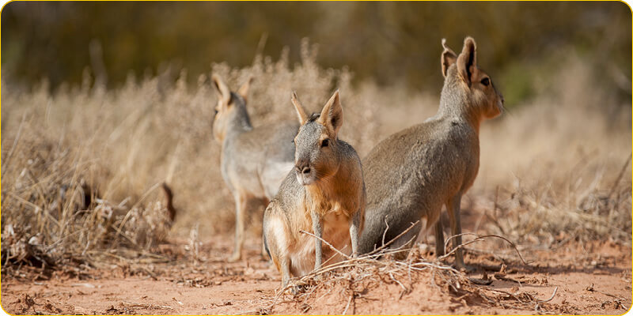
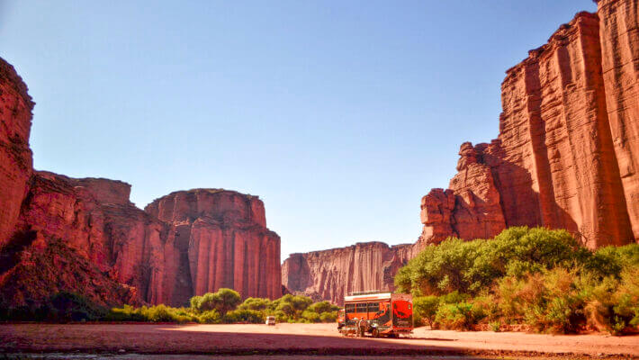

El Parque Nacional Talampaya se encuentra ubicado en la provincia de La Rioja, Argentina. Fue declarao Patrimonio de la Humanidad por la UNESCO en 2000 debido a su importancia cultural y geológica. Este parque protege una extensa área de 2,150 km², brindando un refugio para una gran variedad de flora y fauna autóctona.

La biodiversidad en el Parque Nacional Talampaya es sorprendente y alberga una amplia variedad de especies adaptadas al árido entorno. Entre la flora destacan cactus, jarillas, algarrobos, quebrachos y otros arbustos resistentes a las altas temperaturas y escasa precipitación. En cuanto a la fauna, podrás encontrar guanacos, maras, zorros, pumas, aves como el cóndor andino y una gran cantidad de reptiles y pequeños mamíferos.
Los Petroglifos de Talampaya son un fascinante conjunto de grabados rupestres prehistóricos ubicados en el Parque Nacional Talampaya, en la provincia de La Rioja, Argentina. Estos petroglifos son un testimonio vivo de la antigua presencia humana en la región y representan un valioso patrimonio cultural y arqueológico.
Los Petroglifos de Talampaya representan diversas figuras geométricas, animales, símbolos y seres humanos estilizados. Estos grabados ofrecen pistas sobre la cosmovisión, creencias y formas de vida de las culturas prehistóricas que dejaron su huella en estas rocas.

En el Parque Nacional Talampaya, se puede encontrar una gran diversidad de flora adaptada a las condiciones áridas y desérticas del Desierto del Monte. Algunas de las especies vegetales características incluyen el algarrobo (Prosopis flexuosa), el quebracho blanco (Aspidosperma quebracho-blanco), el chañar (Geoffroea decorticans), el molle (Schinus molle), y el piquillín (Condalia microphylla), entre otras.
El Parque Nacional Talampaya es un área de gran importancia ecológica, ya que alberga ecosistemas únicos y especies vegetales y animales adaptadas a la vida en el desierto.
El Monje de Talampaya es un testimonio fascinante de la fuerza de la naturaleza y su capacidad para crear formas únicas y asombrosas.
Esta singular estructura rocosa ha sido esculpida por la naturaleza a lo largo de millones de años, y su forma se asemeja a la figura de un monje, lo que le ha dado su nombre popular.